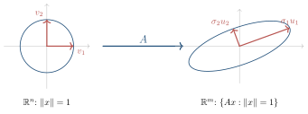
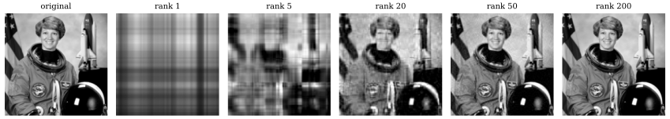
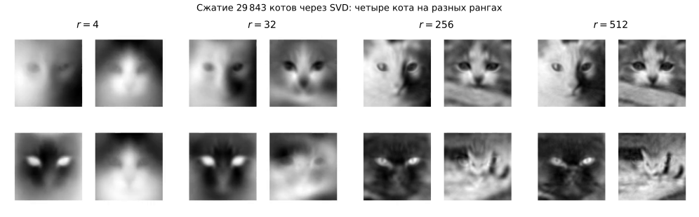
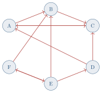

Вычислительная линейная алгебра
Если метод Ньютона из главы 2 был одним маленьким уравнением, упрямо повторяющимся, то линейная алгебра — это язык, на котором говорят сразу о тысячах уравнений и миллионах чисел. Этой главой мы покажем, что многие фокусы современного искусственного интеллекта — от того, как нейросеть «узнаёт» лицо человека, до того, как поисковик ранжирует страницы Интернета, — держатся всего на нескольких разложениях матриц. Мы посмотрим четыре истории: лица, котиков, Интернет и устойчивость нейросетей.
Зачем линейной алгебре отдельная глава
Вы уже встречались с матрицами в школьном курсе — как с прямоугольными таблицами чисел. В современном ИИ матрица — это универсальный носитель данных.
Чёрно-белая фотография 1024\times 1024 — это матрица размера 1024\times 1024, где каждое число — яркость пикселя от 0 (чёрный) до 255 (белый). Цветная — три такие матрицы.
Текст из N слов словаря — это вектор частот длины N (модель «мешка слов»), и набор из M документов — матрица M\times N.
Социальная сеть из N пользователей — матрица N\times N, где элемент (i,j) равен 1, если i подписан на j.
Веса одного слоя нейросети — матрица W, через которую входной сигнал умножается, чтобы получить выходной.
С такими матрицами надо уметь что-то делать: сжимать, сравнивать, упорядочивать, обновлять. И почти всегда оказывается, что нужная операция выражается через одно и то же фундаментальное разложение матрицы — сингулярное. Мы изучим его и применим к четырём задачам:
Узнать лицо по фотографии — eigenfaces (§0.5).
Сжать пространство признаков — eigencats и теорема Эккарта–Янга (§0.4, §0.6).
Упорядочить весь Интернет — PageRank (§0.7).
Понять, когда нейросеть устойчива — оценки Липшицевости (§0.8).
Прежде чем перейти к сюжетам, разберёмся с одной очень земной проблемой: с тем, как компьютер хранит числа.
Когда арифметика лжёт: числа с плавающей точкой
Откройте Python и наберите:
>>> 0.1 + 0.2
0.30000000000000004
>>> 0.1 + 0.2 == 0.3
FalseЭто не баг Python. То же самое выдаст любой современный язык — C, C++, Java, JavaScript. И этому есть фундаментальная причина: двоичная система счисления не умеет точно представить десятичную дробь 0{,}1.
Двоичные дроби и почему 0{,}1 — это «0{,}333\ldots»
В десятичной системе 1/3 = 0{,}3333\ldots — бесконечная дробь. То же самое в двоичной системе случается с 0{,}1:
0{,}1_{10} \;=\; 0{,}0001\,1001\,1001\,1001\ldots_{2}
Дробь периодическая. Любой реальный компьютер хранит её, оборвав после конечного числа разрядов (обычно 52 двоичных знака после запятой — стандарт IEEE 754, double precision). Поэтому число, которое программист записывает как 0.1, на самом деле равно
0{,}1\;\approx\;0{,}100\,000\,000\,000\,000\,005\,551\,115\ldots
Когда мы складываем такое «искажённое 0{,}1» с искажённым 0{,}2, ошибки усиливаются — и получается тот самый «лишний хвостик» 4\cdot 10^{-17}, который мы видели в листинге.
Машинной точностью называют наименьшее положительное число \varepsilon, такое что в компьютерной арифметике 1+\varepsilon \neq 1. Для стандарта double оно равно \varepsilon_{\text{маш}} = 2^{-52}\approx 2{,}22\cdot 10^{-16}.
Это означает: какое бы хорошее число x вы ни записали, оно известно компьютеру лишь с относительной точностью \sim\varepsilon_{\text{маш}}.
Когда это становится опасным: катастрофическое сокращение
Маленькая ошибка в 17-м знаке — мелочь? Не всегда. Рассмотрим безобидное на вид вычисление:
g(x) \;=\; \dfrac{1-\cos x}{x^{2}}\qquad\text{при }x=10^{-8}.
По формуле Тейлора 1-\cos x \approx x^{2}/2, так что g(10^{-8})\approx 0{,}5. Что выдаст компьютер?
>>> from math import cos
>>> x = 1e-8
>>> (1 - cos(x)) / x**2
0.0 # вместо 0.5!Что произошло? Число \cos(10^{-8})\approx 1-5\cdot 10^{-17} так близко к единице, что компьютер просто хранит его как ровно единицу (поправка 5\cdot 10^{-17} меньше \varepsilon_{\text{маш}}). Разность 1-\cos x обнулилась, и весь ответ обнулился вместе с ней.
Это явление называется катастрофическим сокращением (catastrophic cancellation): когда из двух близких чисел вычитают и теряют все значащие цифры разом.
Воспользуемся тождеством 1-\cos x = 2\sin^{2}(x/2):
g(x) \;=\; \dfrac{2\sin^{2}(x/2)}{x^{2}}\;=\;\dfrac12\!\left(\dfrac{\sin(x/2)}{x/2}\right)^{2}.
Внутри теперь нет вычитания близких чисел, и Python выдаёт 0.49999999999999983 — погрешность лишь в последнем знаке.
Главный практический вывод. Если ваш численный алгоритм выдаёт странный ответ, первая гипотеза, которую следует проверить, — это не «бага в библиотеке», а катастрофическое сокращение в вашей формуле. Часто его можно убрать, переписав формулу алгебраически эквивалентным, но численно устойчивым способом.
Стандарт IEEE 754 был принят в 1985 г., в значительной мере благодаря Уильяму Кэхэну (William Kahan, премия Тьюринга 1989 г.). До этого каждый производитель процессоров делал плавающую арифметику по-своему, и одна и та же программа на разных машинах могла давать заметно разные ответы. Кэхэн также является автором знаменитого алгоритма компенсированного суммирования, который позволяет складывать миллионы чисел с почти двойной точностью.
Сингулярное разложение SVD: главный фокус линейной алгебры
Геометрическая идея
Возьмём любую матрицу A размера m\times n и применим её к единичному кругу в \mathbb{R}^{n} (то есть к множеству всех векторов x с \left\lVert x \right\rVert=1, где \left\lVert \cdot \right\rVert — обычная евклидова длина). Что получится в \mathbb{R}^{m}?
Для любой вещественной матрицы A размера m\times n существует разложение
\tag{0.1} \;A \;=\; U\,\Sigma\,V^{\!\top}\;
где
U — ортогональная матрица m\times m (поворот в \mathbb{R}^{m});
V — ортогональная матрица n\times n (поворот в \mathbb{R}^{n});
\Sigma — «диагональная» матрица m\times n с неотрицательными числами \sigma_1\geq \sigma_2\geq\ldots\geq \sigma_r > 0 на диагонали (и нулями ниже), где r=\mathrm{rank}\,A.
Числа \sigma_i называются сингулярными числами матрицы A.
Содержательно (0.1) говорит: любая линейная операция — это три простых действия подряд:
\underbrace{V^{\!\top}}_{\text{поворот в исходном пространстве}} \;\to\; \underbrace{\Sigma}_{\text{растяжение по координатным осям}} \;\to\; \underbrace{U}_{\text{поворот в новом пространстве}}.
Геометрически это значит: образ единичной сферы под действием A — это эллипсоид, у которого полуоси равны \sigma_1,\sigma_2,\ldots (см. рис. 0.1).

Связь с собственными значениями
Сингулярные числа — это, по сути, переодетые собственные значения. А именно:
\tag{0.2} A^{\!\top} A \;=\; (U\Sigma V^{\!\top})^{\!\top}(U\Sigma V^{\!\top}) \;=\; V\,\Sigma^{\!\top}\Sigma\,V^{\!\top}.
Матрица \Sigma^{\!\top}\Sigma — диагональная, на её диагонали стоят \sigma_1^{2},\sigma_2^{2},\ldots. Значит, \sigma_i^{2} — это собственные значения симметричной матрицы A^{\!\top}A, а столбцы V — её собственные векторы. Эта формула важна нам по двум причинам: (1) она обосновывает существование SVD (через известную спектральную теорему для симметричных матриц), (2) она будет рабочим инструментом в § 0.5, когда мы будем вычислять собственные лица.
Сингулярное разложение независимо открыли итальянский математик Эудженио Бельтрами (1873 г.) и француз Камилл Жордан (1874 г.). В современном виде, как разложение прямоугольной матрицы, его сформулировал Карл Эккарт с Гейлом Янгом в 1936 г. Численно надёжный алгоритм вычисления SVD появился лишь в 1965 г. (Голуб и Кахан) — и стал одним из ключевых алгоритмов XX века. Сегодня он реализован в любой математической библиотеке: numpy.linalg.svd, scipy.linalg.svd, torch.svd.
Лучшее малоранговое приближение: теорема Эккарта–Янга
Самое замечательное свойство SVD состоит в том, что оно позволяет ужимать матрицу, выбрасывая всё «несущественное».
Разложение по слагаемым ранга один
Перепишем (0.1) по-другому. Обозначим столбцы матрицы U через u_1,\ldots,u_m (это левые сингулярные векторы), а столбцы V — через v_1,\ldots,v_n (правые сингулярные векторы). Тогда A есть сумма r слагаемых, каждое из которых имеет ранг один:
\tag{0.3} A \;=\; \sum_{i=1}^{r}\sigma_i\,u_i v_i^{\!\top}.
Каждое слагаемое u_i v_i^{\!\top} — это «вертикальный вектор умножить на горизонтальный», и оно само по себе является матрицей ранга один (рис. 0.2).
Если оборвать сумму (0.3) на k-м слагаемом (k<r), получим приближение:
\tag{0.4} A_k \;=\; \sum_{i=1}^{k}\sigma_i\,u_i v_i^{\!\top}.
Это матрица того же размера m\times n, но ранга всего лишь k.
Теорема Эккарта–Янга: A_k — наилучшее приближение
Среди всех матриц B размера m\times n ранга не более k матрица A_k из (0.4) даёт наименьшую ошибку в смысле спектральной нормы:
\tag{0.5} \min_{\mathrm{rank}\,B\,\leq\,k}\;\left\lVert A-B \right\rVert_{2}\;=\;\left\lVert A-A_k \right\rVert_{2}\;=\;\sigma_{k+1}.
Здесь \left\lVert M \right\rVert_2 = \max_{\left\lVert x \right\rVert=1}\left\lVert Mx \right\rVert=\sigma_1(M) — спектральная норма матрицы M (равна её наибольшему сингулярному числу). Утверждение остаётся в силе и для фробениусовой нормы \left\lVert M \right\rVert_F=\sqrt{\sum_{i,j} m_{ij}^{2}}:
\left\lVert A-A_k \right\rVert_F\;=\;\sqrt{\sigma_{k+1}^{2}+\sigma_{k+2}^{2}+\ldots+\sigma_r^{2}}.
Смысл теоремы: если хочется сжать матрицу до ранга k, лучшее, что вы можете сделать, — оставить первые k компонент SVD. Ошибка контролируется отброшенным сингулярным числом \sigma_{k+1}.
Пример: сжатие изображения
Возьмём фотографию 1024\times 768 в градациях серого. Хранение «в лоб» — это 1024\cdot 768 = 786\,432 чисел. Применим к матрице фото SVD и оставим только k старших компонент: придётся хранить
k\cdot(1024+768)+k\;=\;k\cdot 1793
чисел — по одному столбцу u_i, одной строке v_i^{\!\top} и одному числу \sigma_i на каждое слагаемое. Уже при k=50 это \sim 90\,000 чисел — в восемь раз меньше исходного, а визуально потеря почти незаметна (рис. 0.3).
import numpy as np
import matplotlib.pyplot as plt
from skimage import data, color
# Load and convert to grayscale
img = color.rgb2gray(data.astronaut()) # shape (512, 512)
U, S, Vt = np.linalg.svd(img, full_matrices=False)
# Reconstruct using only top-k singular components
ranks = [1, 5, 20, 50, 200]
fig, axes = plt.subplots(1, len(ranks)+1, figsize=(14, 3))
axes[0].imshow(img, cmap='gray'); axes[0].set_title('original')
for ax, k in zip(axes[1:], ranks):
A_k = U[:, :k] @ np.diag(S[:k]) @ Vt[:k, :]
ax.imshow(A_k, cmap='gray')
ax.set_title(f'rank {k}')
for ax in axes: ax.axis('off')
plt.tight_layout(); plt.show()
В 2021 г. Эдвард Ху с соавторами заметили: когда большую языковую модель дообучают на новую задачу, обновление матриц весов \Delta W оказывается почти малоранговой матрицей. Поэтому вместо обучения «полной» \Delta W можно сразу искать её в виде \Delta W = U V^{\!\top} с маленьким k, где U,V — тонкие прямоугольники.
Это метод LoRA (Low-Rank Adaptation). Для модели с 175 миллиардами параметров такой приём сокращает объём дообучаемых весов в тысячи раз — и именно благодаря ему сегодня можно «дофайнтюнить» большую модель на бытовой видеокарте.
Теоретический фундамент LoRA — та самая теорема Эккарта–Янга 0.3, которой почти 90 лет.
Eigenfaces: как алгоритм узнаёт лицо
Постановка задачи
В 1991 г. Мэттью Тёрк и Алекс Пентланд из MIT поставили простой вопрос: можно ли обучить компьютер узнавать лицо, не прибегая ни к каким специальным «лицевым» признакам — носу, глазам, контурам, — а просто работая с матрицей пикселей? Их ответ — метод собственных лиц (eigenfaces) — стал классикой и открыл целую область computer vision.
Идея: каждая фотография лица — это точка в очень многомерном пространстве. Например, лицо 64\times 64 — это вектор длины 64\cdot 64 = 4\,096 в пространстве \mathbb{R}^{4096}. Двух разных людей снимали много раз — получаем облако точек в этом пространстве.
Главное наблюдение: это облако очень узкое. Хотя пространство 4\,096-мерное, реальные лица занимают в нём подпространство размерности всего лишь \sim 50. Найти это подпространство — и есть задача.

Шаг 1. Среднее лицо и центрирование
Пусть у нас N фотографий x_1,\ldots,x_N\in\mathbb{R}^{d} (где d=4096 для 64\times 64). Вычислим среднее лицо:
\bar x \;=\; \dfrac{1}{N}\sum_{i=1}^{N} x_i.
И вычтем его из каждого изображения: \tilde x_i = x_i - \bar x. Среднее лицо (рис. 0.5) — это размытая маска, в которой видно «лицо вообще»: усреднённые глаза, нос, рот, овал. Дальше мы будем работать только с отклонениями от этого среднего.

Шаг 2. Главные направления изменчивости
Соберём центрированные изображения в строки матрицы X\in\mathbb{R}^{N\times d} (одна строка = одно лицо). Применим к ней SVD:
X\;=\;U\,\Sigma\,V^{\!\top}.
Каждая строка v_i^{\!\top} матрицы V^{\!\top} — это вектор длины d=4096, который можно нарисовать как картинку 64\times 64. Эти картинки и называются собственными лицами — eigenfaces (рис. 0.6). Содержательно:
v_1 — направление наибольшей изменчивости. Чаще всего это «освещение слева/справа».
v_2 — направление второй по величине изменчивости (часто «улыбка / не улыбка»).
v_3,\ldots — постепенно более тонкие признаки: очки, форма щёк, наклон головы, индивидуальные особенности.

Шаг 3. Лицо как вектор из 50 чисел
Зафиксируем k (обычно k=30\div 100) и спроектируем каждое лицо x на эти k собственных лиц:
\tag{0.6} \alpha_i \;=\; v_i^{\!\top}(x-\bar x),\qquad i=1,\ldots,k.
Получили вектор коэффициентов \alpha=(\alpha_1,\ldots,\alpha_k)\in\mathbb{R}^{k}. Это и есть «лицо человека» с точки зрения алгоритма — всего 50 чисел вместо 4096.
Шаг 4. Распознавание и реконструкция
Распознавание. Чтобы узнать, кто на новой фотографии y, вычислим её коэффициенты \beta по (0.6) и найдём в базе ближайшего соседа: \hat j = \operatorname*{arg\,min}_j \left\lVert \beta-\alpha^{(j)} \right\rVert.
Реконструкция. Зная \alpha, можно восстановить лицо:
x \;\approx\; \bar x + \sum_{i=1}^{k}\alpha_i\,v_i.
Рис. 0.7 показывает, как качество реконструкции растёт с k.

Реализация на Python
import numpy as np
import matplotlib.pyplot as plt
from sklearn.datasets import fetch_olivetti_faces
# 1. Load: 400 faces, 64x64 each
faces = fetch_olivetti_faces().images # (400, 64, 64)
X = faces.reshape(400, -1) # (400, 4096)
# 2. Center: subtract the mean face
x_bar = X.mean(axis=0)
X_centered = X - x_bar
# 3. SVD => eigenfaces are rows of Vt
U, S, Vt = np.linalg.svd(X_centered, full_matrices=False)
# 4. Project all faces onto top-k eigenfaces
k = 50
alpha = X_centered @ Vt[:k].T # (400, 50)
# 5. Recognise: nearest neighbour in alpha-space
def recognise(y, k=50):
y_centered = y.flatten() - x_bar
beta = Vt[:k] @ y_centered
distances = np.linalg.norm(alpha - beta, axis=1)
return distances.argmin()
# 6. Reconstruct a face from k coefficients
def reconstruct(idx, k=50):
return x_bar + Vt[:k].T @ alpha[idx, :k]Метод eigenfaces — родоначальник всех современных систем распознавания лиц, включая ту, что разблокирует ваш смартфон. Современные системы заменяют SVD на свёрточную нейросеть (см. § 3.3.7), но базовая идея — сжать лицо в короткий вектор, в котором близкие лица оказываются рядом — осталась той же. Эти короткие векторы сегодня называют эмбеддингами.
Eigencats: то же самое для котиков^\star
Кошки — отличный материал для проверки гипотезы, что метод eigenfaces работает на любых однородных объектах, не только на лицах. Возьмём датасет в \sim 2000 котиков1 и проведём тот же эксперимент.
1 Например, Cats Faces Dataset на Kaggle: фотографии 64\times 64. Готовые ноутбуки выложены в репозитории nla360.

Качественная картина повторяется: первое eigencat ловит освещение, второе — наклон головы, дальше идут вариации формы морды и ушей. В сжатом виде каждый кот превращается в \sim 50 чисел.
Пространство «реальных» объектов всегда узкое. Будь это лица людей, морды котов, рукописные цифры (датасет MNIST) или фотографии природы — реальные данные занимают в исходном многомерном пространстве маленькое подпространство. Распознавание = найти это подпространство и работать в нём.
Эта идея — фундамент современных автокодировщиков и эмбеддингов (см. § 3.4.3–3.4.6). SVD — её самая ранняя и самая понятная реализация.
PageRank: как Google нашёл порядок в Интернете
Задача и история
К 1996 г. поисковики типа AltaVista и Yahoo! ранжировали страницы по тому, сколько раз искомое слово встречается в тексте. Это легко обманывалось: достаточно было набить страницу популярными словами белым цветом по белому фону, и она попадала в топ выдачи.
Лоуренс Пейдж и Сергей Брин, тогда аспиранты Стэнфорда, предложили другой принцип ранжирования: страница важна, если на неё ссылаются другие важные страницы.
Граф ссылок как матрица
Обозначим N — число всех страниц Интернета (на 1998 г. — около 2{,}4\cdot 10^{8}, сегодня — \sim 10^{11}). Построим матрицу P\in\mathbb{R}^{N\times N}:
P_{ij}\;=\;\begin{cases} \dfrac{1}{c_j}, & \text{если со страницы $j$ есть ссылка на $i$,}\\ 0, & \text{иначе,} \end{cases}
где c_j — полное число исходящих ссылок со страницы j. Содержательно: P_{ij} — это вероятность того, что пользователь, сидящий на странице j и случайно ткнувший на одну из её ссылок, окажется на странице i. Поэтому P называется матрицей переходов случайного блуждания по графу Интернета.
Стационарное распределение = собственный вектор
Пусть r\in\mathbb{R}^{N} — вектор «важностей»: r_i — степень важности страницы i. Принцип Пейджа–Брина формализуется системой:
\tag{0.7} r\;=\;P r.
То есть важность каждой страницы равна сумме важностей тех страниц, которые на неё ссылаются, делённой на число их исходящих ссылок.
Уравнение (0.7) говорит: r — это собственный вектор матрицы P с собственным значением 1. И в этом — вся суть PageRank.
Если все элементы матрицы P положительны (или хотя бы граф ссылок сильно связен и непериодичен), то собственное значение 1 у P существует, оно простое и наибольшее по модулю, а соответствующий собственный вектор r единственен и имеет положительные компоненты. Этот r называется стационарным распределением случайного блуждания.
(Эта теорема — Оскар Перрон, 1907 г., и Георг Фробениус, 1912 г. — исторически появилась задолго до Интернета, в контексте моделей популяций.)
Демпфирующий множитель и формула Брина–Пейджа
В реальной матрице Интернета у некоторых страниц нет исходящих ссылок (dangling pages), а в других группах — циклы. Чтобы гарантировать применимость теоремы Перрона–Фробениуса, Пейдж и Брин ввели демпфирующий множитель \beta\in(0,1) (обычно \beta=0{,}85):
\tag{0.8} \;r\;=\;\beta P r + \dfrac{1-\beta}{N}\,\mathbf{1}.\;
Здесь \mathbf{1}=(1,1,\ldots,1)^{\!\top}. Содержательно: с вероятностью \beta\approx 0{,}85 случайный сёрфер кликает по ссылке, а с вероятностью 1-\beta\approx 0{,}15 — телепортируется на случайную страницу Интернета.
Как находить r: степенной метод
Прямо решать систему (I-\beta P)r=\frac{1-\beta}{N}\mathbf{1} с N\sim 10^{11} невозможно. Но и не надо: вектор r можно получить простой итерацией.
Степенной метод для PageRank.
Инициализация: r^{(0)} \leftarrow \tfrac{1}{N}\mathbf{1}.
Итерация: r^{(t+1)} \leftarrow \beta\,P\,r^{(t)} + \dfrac{1-\beta}{N}\,\mathbf{1}.
Остановка: \left\lVert r^{(t+1)}-r^{(t)} \right\rVert < \varepsilon.
Сходимость гарантируется теоремой Перрона–Фробениуса: \left\lVert r^{(t)}-r \right\rVert\leq C\cdot\beta^{t}, то есть погрешность убывает геометрически со знаменателем \beta=0{,}85. На практике хватает 50\div 100 итераций.
Игрушечный пример: 6 страниц
Возьмём маленький «Интернет» из шести страниц (рис. 0.9) и посчитаем для него PageRank.

import numpy as np
# Adjacency list -> column-stochastic transition matrix P
links = {'A': ['B','C'], 'B': ['C'], 'C': ['A'],
'D': ['C','A'], 'E': ['D','B','F'], 'F': ['E','B']}
pages = list(links); n = len(pages); idx = {p: i for i, p in enumerate(pages)}
P = np.zeros((n, n))
for j, p in enumerate(pages):
out = links[p]
for q in out:
P[idx[q], j] = 1.0 / len(out)
# PageRank via power iteration
beta, eps = 0.85, 1e-10
r = np.ones(n) / n
for t in range(200):
r_new = beta * P @ r + (1 - beta) / n
if np.linalg.norm(r_new - r, 1) < eps: break
r = r_new
for p, ri in sorted(zip(pages, r), key=lambda t: -t[1]):
print(f'{p}: {ri:.4f}')Выдача программы:
\text{C: }0{,}295,\quad \text{A: }0{,}252,\quad \text{B: }0{,}175,\quad \text{E: }0{,}098,\quad \text{F: }0{,}092,\quad \text{D: }0{,}087.
Лидер — C, хотя на неё формально ссылаются столько же страниц, сколько на A: PageRank учёл, что одна из ссылок на C приходит с уже-важной страницы B.
Алгоритм PageRank был опубликован в 1998 г. в студенческой работе Sergey Brin, Larry Page, «The PageRank Citation Ranking: Bringing Order to the Web». В том же году Брин и Пейдж основали Google. К 2004 г. компания вышла на IPO, а к 2010-м стала одной из крупнейших в мире. Сам Стэнфорд получил \sim 336 миллионов долларов от лицензирования патента — который изначально просто описывал итерационный метод для собственного вектора.
Идея использовать собственный вектор графа для измерения «важности» позднее была обобщена и применена в наукометрии (Eigenfactor для ранжирования научных журналов), в рекомендательных системах, а также в современных нейросетях для графов (Graph Neural Networks).
Когда нейросеть устойчива: оценки Липшицевости^\star
Сюжет: когда панда становится гиббоном
В 2014 г. Иэн Гудфеллоу и соавторы опубликовали ставшую знаменитой картинку (рис. 0.10): обычная фотография панды, которую современная нейросеть уверенно опознаёт как «panda» с вероятностью 57{,}7\%. К каждому пикселю прибавлена крошечная, визуально незаметная человеку поправка. На обновлённой картинке сеть теперь уверенно (с вероятностью 99{,}3\%) считает, что видит гиббона.

Этот эффект называется adversarial-атакой и долгое время считался экзотикой. Сейчас понятно: причина в простом числе, которое сопровождает любую функцию — её константе Липшица.
Константа Липшица: формальное определение
Функция f\colon\mathbb{R}^{n}\to\mathbb{R}^{m} называется Липшицевой с константой L>0, если для любых x,y\in\mathbb{R}^{n} выполнено
\tag{0.9} \left\lVert f(x)-f(y) \right\rVert\;\leq\;L\,\left\lVert x-y \right\rVert.
Наименьшее L, для которого (0.9) выполнено, называется константой Липшица функции f и обозначается \mathrm{Lip}(f).
Содержательно \mathrm{Lip}(f) показывает, во сколько раз может усилиться входное возмущение на выходе функции. Если \mathrm{Lip}(f)=L, то малое возмущение \delta на входе может вызвать возмущение до L\cdot\left\lVert \delta \right\rVert на выходе.
Пример. Для линейного отображения f(x)=Wx имеем f(x)-f(y)=W(x-y), откуда \left\lVert f(x)-f(y) \right\rVert\leq \left\lVert W \right\rVert_2\cdot\left\lVert x-y \right\rVert, и константа Липшица — это в точности спектральная норма матрицы W:
\tag{0.10} \mathrm{Lip}(Wx)\;=\;\left\lVert W \right\rVert_2\;=\;\sigma_1(W).
Здесь \sigma_1(W) — наибольшее сингулярное число матрицы W. Вот здесь в нашу историю входит SVD из § 0.3.
Композиция: Липшицева константа цепочки
Если f и g — Липшицевы с константами L_f и L_g, то их композиция f\circ g — тоже Липшицева, причём
\tag{0.11} \mathrm{Lip}(f\circ g)\;\leq\;\mathrm{Lip}(f)\cdot\mathrm{Lip}(g).
Доказательство. \left\lVert f(g(x))-f(g(y)) \right\rVert\leq L_f\left\lVert g(x)-g(y) \right\rVert\leq L_f L_g\left\lVert x-y \right\rVert. \square\square
Применение к нейросети
Возьмём типичную нейросеть глубины K:
f(x)\;=\;\sigma\bigl(W_K\,\sigma(W_{K-1}\,\sigma(\cdots\sigma(W_1 x))\bigr),
где W_i — матрицы весов, \sigma — поэлементная активация (ReLU, сигмоида, и т.п.). Для большинства активаций \mathrm{Lip}(\sigma)\leq 1 (для ReLU и сигмоиды это равно 1). По теореме 0.6:
\label{eq:nn-lip} \;\mathrm{Lip}(f)\;\leq\;\prod_{i=1}^{K}\left\lVert W_i \right\rVert_2\;
Это и есть тот «лишний рычаг», который объясняет уязвимость нейросетей. Если \left\lVert W_i \right\rVert_2 \approx 2 для каждого слоя из K=20 слоёв, то возмущение на входе потенциально усиливается в 2^{20}\approx 10^{6} раз. Невидимая поправка \delta с \left\lVert \delta \right\rVert=10^{-3} может вызвать изменение выхода до 10^{3} — этого хватит, чтобы перебросить классификатор из одного класса в другой.
Как защищаться: спектральная нормализация
Естественная стратегия: после каждого шага обучения нормализовать матрицу W_i так, чтобы \left\lVert W_i \right\rVert_2 = 1. Это и есть метод Spectral Normalization (Миято и соавт., 2018), сделавший обучение генеративных нейросетей (GAN) намного стабильнее.
Технически: на каждом шаге считаем \sigma_1(W) (с помощью одной итерации степенного метода — почти бесплатно!) и заменяем W \mapsto W/\sigma_1(W).
def spectral_normalize(W, n_iter=1):
"""One step of power iteration to estimate sigma_1(W) and rescale."""
u = np.random.randn(W.shape[0])
for _ in range(n_iter):
v = W.T @ u; v /= np.linalg.norm(v)
u = W @ v; u /= np.linalg.norm(u)
sigma_1 = u @ W @ v
return W / sigma_1Связь с устойчивостью в физике. Похожая ситуация хорошо известна в теории динамических систем: если константа Липшица отображения > 1, малое возмущение начального условия экспоненциально нарастает (классический эффект бабочки в погодных моделях). Spectral Normalization можно рассматривать как искусственное гашение этого эффекта.
Подведение итогов главы
Матрица — это универсальный носитель данных для ИИ: картинки, тексты, графы, веса нейросети.
Числа с плавающей точкой (§0.2) — вычисления на компьютере всегда приближённые с относительной ошибкой \sim\varepsilon_{\text{маш}}\approx 10^{-16}. Самая опасная ошибка — катастрофическое сокращение при вычитании близких чисел; её часто можно устранить, переписав формулу алгебраически эквивалентным способом.
Сингулярное разложение A=U\Sigma V^{\!\top} (§0.3) представляет любую матрицу как «поворот → растяжение по осям → поворот». Сингулярные числа \sigma_i — это коэффициенты растяжения.
Теорема Эккарта–Янга (§0.4): A_k=\sum_{i\leq k}\sigma_i u_i v_i^{\!\top} — лучшее приближение ранга k матрицы A. На этой теореме стоит сжатие изображений, метод eigenfaces и современный LoRA для дообучения больших языковых моделей.
Eigenfaces / eigencats (§0.5–0.6): реальные данные (лица, котики, цифры) живут в очень узком подпространстве своего номинального многомерного пространства. Найти это подпространство = применить SVD к выборке.
PageRank (§0.7): «важность» страницы Интернета = компонента собственного вектора матрицы переходов случайного блуждания. Алгоритм находит его простой итерацией; теорема Перрона–Фробениуса гарантирует сходимость.
Константа Липшица нейросети (§0.8) растёт мультипликативно от слоя к слою; именно поэтому глубокие сети уязвимы к adversarial-атакам. Спектральная нормализация ограничивает \left\lVert W_i \right\rVert_2=1 и стабилизирует обучение.
Что почитать дальше
Е. Е. Тыртышников. Методы численного анализа. М.: Академия, 2007. — классический российский учебник по вычислительной линейной алгебре университетского уровня.
G. Strang. Linear Algebra and Learning from Data. Wellesley-Cambridge Press, 2019. — свежая книга от автора знаменитого MIT-курса 18.06, написанная с прицелом на data science.
L. N. Trefethen, D. Bau. Numerical Linear Algebra. SIAM, 1997. — классика, с очень понятным изложением SVD и итерационных методов.
Видеокурс «Numerical Linear Algebra», И. В. Оселедец, Сколтех (github.com/MerkulovDaniil/nla360). Лекции, семинары, ноутбуки — из которых, в частности, и взяты eigencats для этой главы.
S. Brin, L. Page. The Anatomy of a Large-Scale Hypertextual Web Search Engine. WWW Conference, 1998. — оригинальная статья про PageRank, читается легко.
I. Goodfellow et al. Explaining and Harnessing Adversarial Examples. ICLR, 2015. — статья про панду-гиббона, из которой взят рис. 0.10.
Большой итоговый проект
Постройте свою рекомендательную систему для фильмов.
Возьмите датасет MovieLens-100K (открытый, 100\,000 оценок, \sim 1000 пользователей \times \sim 1700 фильмов). Постройте матрицу «пользователь–фильм» R, где R_{ij}\in\{1,\ldots,5\} — оценка, поставленная пользователем i фильму j, а 0 — «не смотрел».
Постройте малоранговое приближение R\approx U\Sigma V^{\!\top} с k=20 компонентами через SVD.
Объясните содержательно, что такое строки U (профили пользователей) и столбцы V (профили фильмов) в этом приближении. Сколько чисел теперь хранит модель вместо 1000\cdot 1700?
Для нескольких реальных пользователей выпишите топ-5 фильмов, которые рекомендация модели предлагает посмотреть. Совпадают ли они с любимыми жанрами пользователя?
Найдите два «противоположных» фильма с наибольшим расстоянием между их столбцами V и подумайте, можно ли увидеть содержательный смысл в этой разделяющей оси (боевик vs. мелодрама? старое vs. новое?).
(\star) Замените SVD на алгоритм PageRank, построив граф «фильмы, которые часто оценивают одинаково». Получится ли тот же топ?
Сложите в Python 10\,000\,000 копий числа 0{,}1. Сколько должно получиться? Сколько получается на самом деле? Почему?
Вычислите f(x)=\sqrt{x+1}-\sqrt{x} при x=10^{16} напрямую и через формулу f(x)=\frac{1}{\sqrt{x+1}+\sqrt{x}}. Сравните ответы. Какой устойчив, почему?
Найдите вручную SVD матрицы A=\bigl(\begin{smallmatrix}3 & 0\\0 & 4\end{smallmatrix}\bigr) и A=\bigl(\begin{smallmatrix}0 & 1\\-1 & 0\end{smallmatrix}\bigr). Что в обоих случаях геометрически делают U, \Sigma, V?
Возьмите свою фотографию 300\times 300 в градациях серого. Сделайте сжатие через SVD с рангами k=5, 20, 50, 100. При каком k вы перестаёте узнавать самого себя?
Для игрушечного графа из рис. 0.9 прокрутите 5 итераций степенного метода вручную, начав с r^{(0)}=(\tfrac16,\ldots,\tfrac16)^{\!\top}. Совпали ли ваши значения с программными после 5 шагов? а после 20?
^{\star} Покажите, что для функции \sigma(x)=\max(0,x) (ReLU) константа Липшица равна 1. Тот же вопрос для сигмоиды \sigma(x)=1/(1+e^{-x}): чему равна \mathrm{Lip}(\sigma) и в какой точке производная максимальна?
^{\star} Найдите спектральную норму матрицы W=\bigl(\begin{smallmatrix}1 & 2\\2 & 1\end{smallmatrix}\bigr) двумя способами: (а) через определение \left\lVert W \right\rVert_2=\max_{\left\lVert x \right\rVert=1}\left\lVert Wx \right\rVert (с использованием собственных значений W^{\!\top}W); (б) одной итерацией степенного метода (с любым стартом). Совпали ли ответы?